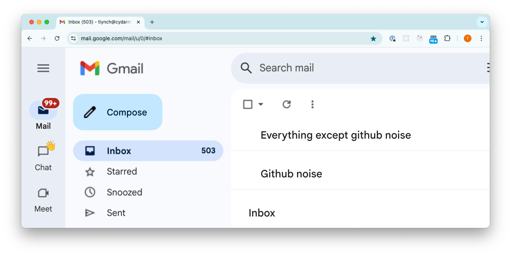

How I Cut GitHub Notification Noise by Over 90% Using Gmail Filters
The Problem: GitHub's Notification System Falls Short
After tracking a month of GitHub emails, I was faced with a stark reality: only 28 out of 317 notifications (8.8%) actually required my attention. The rest? Pure noise cluttering my inbox.
If you've ever tried using GitHub's native notification settings, you'll quickly hit these frustrating limitations:
- The "participation-only" setting sounds promising but misses critical review requests
- Watch settings are all-or-nothing for entire repositories when you only care about specific parts
- There's no way to separate CI updates from human interactions
- You can't prioritize direct mentions over random thread subscriptions
The Solution: Gmail's Filtering Power

After some tinkering, I built a system using Gmail's Multiple Inboxes feature that achieved a 91.2% noise reduction. It works by:
- Keeping critical GitHub notifications (like review requests) visible alongside my regular emails
- Banishing all the routine updates to their own section where they won't distract me
The beauty of this? Zero configuration needed in GitHub itself!
The Implementation
Setting this up is surprisingly simple:
Step 1: Enable Gmail Multiple Inboxes
- Click Settings → See all settings → Inbox tab → Select "Multiple inboxes"
Step 2: Configure Two Search Queries
In the Multiple Inboxes settings, add the following search queries:
-
Section 1: "Everything except github noise"
-from:github.com OR (cc:author@noreply.github.com OR cc:mention@noreply.github.com OR cc:assign@noreply.github.com OR (cc:review_requested@noreply.github.com "requested your review")) -
Section 2: "Github noise"
from:github.com -cc:author@noreply.github.com -cc:mention@noreply.github.com -cc:assign@noreply.github.com -(cc:review_requested@noreply.github.com "requested your review")
Step 3: Position and Save
- Set "Multiple inbox position" to "Above the inbox"
- Set maximum section size to fit your workflow (15-20 works well for me)
Why This Works Better Than GitHub's Settings
I've compared this approach to GitHub's native settings, and the differences are stark:
| Capability | GitHub Native | Gmail Filters |
|---|---|---|
| Separate review requests from thread comments | ❌ | ✅ |
| Keep critical notifications visible among regular emails | ❌ | ✅ |
| Filter by notification type across all repositories | ⚠️ Limited | ✅ |
| Distinguish between CI and human interactions | ❌ | ✅ |
The key advantage? GitHub forces an all-or-nothing approach per repository, while Gmail filters let you create notification categories that work across your entire workflow.
The Proof: Real-World Results
After implementing this setup and testing it across multiple repositories for a month:
- Before: 317 monthly GitHub emails with only 28 actionable (8.8%)
- After: Actionable emails remain visible in my primary inbox, with 91.2% of noise neatly tucked away
Best of all, I verified that no critical notifications were miscategorized during testing.
Power-Up: Auto-Labeling for Finer Control
Want to take this even further? Create Gmail filters that auto-label GitHub notifications with better precision:
-
Label: "GitHub/Mention"
from:notifications@github.com cc:mention@noreply.github.com -
Label: "GitHub/Assigned"
from:notifications@github.com cc:assign@noreply.github.com -
Label: "GitHub/ReviewRequested"
from:notifications@github.com cc:review_requested@noreply.github.com "requested your review" -
Label: "GitHub/CI"
from:ci_activity@github.com -
Label: "GitHub/MyPRs"
from:notifications@github.com subject:"Your pull request"
Then incorporate these labels in your Multiple Inboxes queries:
-from:github.com OR label:GitHub/Mention OR label:GitHub/Assigned OR label:GitHub/ReviewRequestedThis refines filtering beyond the main solution while retaining all the benefits.
Try It Yourself
The implementation takes less than 2 minutes - seriously! Just copy the search queries, paste them into Gmail's Multiple Inboxes settings, and watch your notification noise disappear.
I'd love to hear if this works for you or how you've improved it. Happy filtering!